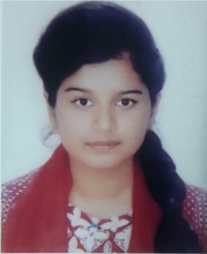

PERSONAL INFORMATIONName : Aishwarya Debnath Ayshi Father's Name : Dilip kumar Nath Mother's Name : Bishnupriya Dey Date of Birth : 25/09/1998 Gender : Female Blood Group : O+ Nationality : Bangladeshi Religion : Hindusm Present Address : Flat no: 13/C, 24/1, Rangs Kanon, Maya Kanon(Mainroad), Sabujbag, Dhaka-1214 Permanent Address : Village: South Tazpur, P.O: Tazpur, Upazilla: Sirajdikhan, District: Munshiganj EDUCATIONSSC 2013-2014 Ideal School & College, Mothijheel, Dhaka-1000 GPA : 5.00(out of 5.00) HSC 2015-2016 Ideal School & College, Mothijheel, Dhaka-1000 GPA : 5.00(out of 5.00) BSc 2018-Running Software Engineering(SE)
American International University-Bangladesh |

Aishwarya DebnathAyshiStudent About MeI am Aishwarya Debnath Ayshi. I am studying software Engineering(SE) at American International University-Bangladesh(AIUB).I am always energetic and eager to learn new skills. I am a dependable person who is great at time management. ContactPhone 01989840905 Aishwarya.debnath25@gmail.com |
DEVELOPMENT EXPERIENCES
EXTRACURRICULAR ACTIVITIES
SKILLS
|